If you could live anywhere in the United States, where would it be? Chances are your ideal place would have beautiful scenery and recreational opportunities; civic pride and a healthy economy; and a community of people who care about the environment, sustainability, alternative energy and fresh, wholesome food.
Mother Earth News went looking for such places and quickly came up with dozens of them: Portland, Ore., for its environmental awareness; Madison, Wis., for its great farmers markets; Boulder, Colo., for its fantastic recreation. But we wanted to find great places that you may not have heard of - towns that are smaller and less expensive, yet still as interesting as those that frequently make lists of great places to live.
We didn’t choose these towns based on a statistical analysis or scientific survey. Instead, we brainstormed standout towns we’ve visited, lived in or heard about from readers. They had to be places where people interested in sustainable living would find kindred souls. We eventually narrowed our lengthy list to 12 communities from all across the country. Then we read up on each town, talked to residents and studied the population and climate data. We also researched how much it costs to live in these towns - the index we used accounts for everything from housing to food to transportation to entertainment. The U.S. average is 100, so a number less than 100 indicates the town is less expensive than the average, and vice versa.
Even if you’re not thinking about moving, we encourage you to visit these unique towns. Also think about what makes them great; they may provide ideas to help make your community a better place to live.
Here, then, is Mother’s first list of “Great Places You’ve Never Heard Of.” We know there are many more unique and little-known places out there, so to nominate towns we should spotlight in the future, write to us or post comments at the bottom of this page.
Ithaca just might be a utopia for the eco-minded. Unless, that is, you mind snow - the area averages 67.3 inches of it each year. This dynamic college town (home to Cornell University and Ithaca College) enjoys beautiful scenery at the southern tip of Cayuga Lake in New York’s Finger Lakes region. Within the city limits are gorges, numerous waterfalls and a scenic waterfront. Just a short drive away are charming villages, great parks and bountiful farmland, dotted with orchards and vineyards.
Food is an important element of Ithaca’s identity. The town is home to the famed Moosewood Restaurant, one of the original and most influential vegetarian restaurants in the country, and source of several best-selling cookbooks. Ithaca has an excellent farmers market, which is open four days a week over a long season. It’s under cover, in a volunteer-built pavilion right on the waterfront near the downtown pedestrian marketplace known as Ithaca Commons.
“Community builds” are an honored tradition in Ithaca. The Sciencenter, a children’s science museum with more than 200 hands-on exhibits, was built by volunteers - more than 2,200 people contributed more than 40,000 hours of work. When it was time for an expansion a few years ago, more than 1,000 volunteers pitched in to build an addition. The Sciencenter also has an outdoor park with science-oriented attractions; examples include a suspension bridge made of Kevlar cables and a miniature golf course where every hole poses a new problem, such as launching your ball with a giant catapult or getting it through swinging pendulums.
Ithaca is famous worldwide for creating a local currency called Ithaca Hours, which encourages people to shop locally owned businesses - more than 500 now accept the colorful bills, which are issued in various denominations of the value of an hour’s work at the prevailing wage. By using the local currency, Ithaca residents make sure their money supports their own community. The town also has cooperative health insurance called Ithaca Health Fund.
Ithaca recently joined the Mayors Climate Protection Agreement, in which more than 200 U.S. cities have pledged to reduce their greenhouse gas emissions in accordance with the Kyoto Protocol, the international agreement on climate change that the federal government rejected. Ithaca’s goal is to reduce its greenhouse gas emissions to 20 percent below 2001 levels by 2016. To that end, the city and Tompkins County have agreed to purchase wind energy - offsetting about 1 million pounds of carbon dioxide per year, the equivalent of planting more than 68,000 trees or not driving 868,000 miles each year.
The area’s environmental ethic is evident in the success of EcoVillage, a co-housing community in which 90 percent of the community’s 176 acres is preserved as open space. Residents live in passive solar homes and share ownership of many things, including cars, playground equipment, clothes washers and gardening tools. There’s also a community garden and a Community Supported Agriculture program.
Real estate is quite affordable in the area. The highest prices and lowest availability are in the city because there is little new construction. Houses find buyers quickly. “People who come here and find something they like need to move quickly,” says Audrey Edelman, a local real estate agent. Smaller towns within a 10 to 20 mile radius of Ithaca are other options, especially for those who love historic houses, which are abundant in the area. The best soil for farming and gardening is a bit farther north, on either side of the lake. Rural land sells for $1,000 to $3,000 an acre for large parcels, more for smaller ones.
With the amenities of a much larger city, the scenery of a much smaller one and an active and progressive citizenry, Ithaca shines as a model of a fun, unique and sustainable place to live.
Population: 19,896
County: Tompkins
Climate: cold and snowy winters; warm and moist summers
Cost of living index: 103.7
Median home price: $216,300
Alternative energy: net metering and solar, wind and green building incentives
Don’t miss: The Circle Greenway, a 10 mile walking or bicycling tour of Ithaca.
The town of Blue Hill is a charming center of great restaurants, art galleries and bed-and-breakfasts. The entire peninsula, including the towns of Brooklin, Brooksville, Castine, Harborside, Penobscot and Sedgwick, is a scenic, quiet and pleasant retreat to a calmer and less commercial age.
Besides the stunning blue and green vistas of the area, other attractions include boating in the calm waters of Blue Hill Bay or hiking and bird-watching in Holbrook Island Sanctuary. And don’t miss nearby Acadia National Park.
Helen and Scott Nearing inspired the back-to-the-land movement through their “Good Life” books, which they wrote from their homestead on the Blue Hill Peninsula. You can be inspired by their passion for simple and wise living with a visit to The Good Life Center in Harborside, where you can tour their hand-built stone house and organic garden. Call ahead or visit the Web site to check hours before you visit: (207) 326-8211; www.goodlife.org.
Another resident of the Blue Hill Peninsula and influential force in the sustainability movement is Eliot Coleman, author of The New Organic Grower and Four-Season Harvest. Coleman proved that you can grow vegetables year-round, even in this part of Maine. To learn more, visit his Web site, www.fourseasonfarm.com.
Population: 2,346
County: Hancock
Climate: a four-season climate; cold winters with lots of snow; cool summers; ample rainfall; fog possible year-round
Cost of Living Index: 106.1
Median Home Price: $197,000
Alternative energy: net metering and rebates for solar systems
Don’t miss: the Nearing homestead
Located in southeast Ohio, Athens looks nothing like the rest of the state - with its rolling, forested hills, Athens is actually part of Appalachia. “Even though it’s only an hour and a half from Columbus, it’s a whole other world,” says Dave Gutknecht, manager of the Athens farmers market and editor of Cooperative Grocer magazine. To help residents enjoy the calm beauty of the area, there are several state parks nearby and a paved bike trail from Athens to Nelsonville.
Farmland is available in Athens, but it’s not the black topsoil and flat fields of typical Midwestern farms. Instead, farms in the area tend to be small, and growers have to work harder to make the clay soil productive. But many have taken up the challenge, and, thanks to the mild climate, have turned the area into a bit of horticultural heaven. The Athens farmers market is open year-round and everything sold is local. Athens also has a community kitchen that growers can use to make value-added food products.
Athens is home to Ohio University, which gives it all the benefits of a college town: arts, culture, eclectic restaurants and bookstores, speakers and sporting events. But unlike some better-known college towns, Athens remains fairly remote and inexpensive.
Population: 21,824
County: Athens
Climate: cold winters and warm summers; generally without extreme temperatures
Cost of living index: 92
Median home price: $144,900
Alternative energy: net metering, some loan and grant programs
Don’t miss: Dairy Barn Arts Center
The Texas Hill Country is a popular tourist destination, especially in spring when the meadows are awash in bluebonnets and other wildflowers. The area has grown rapidly in the past 10 years, as retirees, artists and young families flee ever-growing cities for a more peaceful life in a smaller community. Wimberley is one such community that still feels like a small town but has enough happening that it may be the next Hill Country boom town. It’s situated on the picturesque Blanco River and Cypress Creek, and it has a historic town square with 65 shops.
Wimberley is known far and wide for its Market Days, held the first Saturday of every month from April through December. The outdoor market gives local vendors a place to sell a variety of wares, including crafts, food, artwork, antiques and furniture - it’s a great venue for the self-employed.
The area is renowned for peaches and pecans - you can pick up some at the Wednesday farmers market or the Hill Country Natural Foods store. Both sell all sorts of locally grown products. Destination farms in the area feature wine, lavender, olive oil, flowers and vegetables.
“The climate is fabulous for almost year-round gardening here,” says Frank Arnosky of Arnosky Family Farms. “We can grow cool season crops all winter long.”
Pamela Arnosky, Frank’s wife, adds: “The best gardening in the Hill Country is along the creek bottoms, and there are numerous pockets of good soil located along the ephemeral creeks. The hilltops are rocky, but the views are lovely! We have days here when the climate is crisp and dry like New Mexico. On wet days, the weather is reminiscent of western North Carolina!”
The Arnoskys found the Wimberley area to be the perfect place to homestead. They came 20 years ago, lived in a tent while they built their house, started a farm and home-schooled their four children. Today they sell vegetables, flowers, bedding plants and other farm produce at farmers markets and to numerous local grocery stores.
Doug Stewart, a real estate agent and 35 year resident of the Texas Hill Country, says that land prices have been rising because Wimberley is close to Austin and San Antonio. Current prices are $6,000 to $8,000 per acre, with waterfront land much more expensive.
Stewart recommends that prospective homesteaders work closely with a real estate agent who knows the soils in the area, and advises that fertile soil increases as the landscape transitions from the Hill Country to the black soil east of Interstate 35.
Population: 2,724
County: Hays
Climate: hot summers; mild winters; enough rain for things to grow
Cost of living index: 93.8
Median home price: $190,300
Alternative energy: net metering and renewable energy incentives
Don’t miss: The Corral Theatre, an outdoor movie theater with showings at “dark:30 p.m.” on Fridays and weekends through most of the summer. Bring your own lawn chair.
Decatur is technically its own city, but is just 7 miles from Atlanta, so it’s part of that sprawling metropolitan area. In recent years, it has experienced a renaissance and is now a trendy outpost with all the benefits of urban living: public transit, arts, restaurants and historic buildings.
If you want to live in a city, but still feel like you’re part of a neighborhood, Decatur has a lot to offer.
Population: 18,251
County: DeKalb
Climate: hot and humid summers; mild winters
Cost of living index: 118.1
Median home price: $312,400
Alternative energy: net metering; no other incentives
Don’t miss: Agnes Scott College in the historic district
Your image of southeast Iowa probably doesn’t include the world’s premier ayurvedic health spa, more restaurants per capita than San Francisco or 25 art galleries on the downtown square, but these are just some of the many features of Fairfield, a surprisingly sustainable and cosmopolitan town.
Since 1971, Fairfield has been home to Maharishi University of Management, founded by the Maharishi Mahesh Yogi. What began as an effort to teach India’s ancient principles of health and peace to Americans has spread into many aspects of life in the community. Fairfield hosts an Eco-Fair every year, and has the most homes with solar energy or other green building features in Iowa. The county has the most acres of organic cultivation in the state. It also has earned praise for its entrepreneurial spirit - many small businesses thrive there.
Two miles north of Fairfield is Maharishi Vedic City, where all homes are designed and built according to the principles of ayurvedic architecture, in which each building faces east and has a central silent space called a Brahmasthan and a golden roof ornament called a kalash. The sale of nonorganic food is banned in the city, and construction recently began on what will be 100 acres of greenhouses powered by wind and solar energy for the year-round production of organic food.
Population: 9,459
County: Jefferson
Climate: hot summers; cold winters; rainy springs
Cost of living index: 79.7
Median home price: $96,200
Alternative energy: net metering and renewable energy incentives
Don’t miss: Maharishi University’s golden domes
“Charming” is the first word that comes to mind when you enter downtown Northfield. The streets are lined with historic buildings filled with locally owned shops and cafes. A pedestrian bridge crosses the rushing Cannon River where it cascades over a dam. Stately houses and big churches adorn the hills above downtown.
A thriving city center usually indicates a community with vitality, and Northfield is no exception. It is home to two well-regarded colleges, Carleton and St. Olaf, which provide jobs, youthful energy and an endless selection of concerts, lectures, art shows and sporting events. Both colleges pride themselves on their environmental awareness, evidenced by the two wind turbines that generate electricity for the schools. At St. Olaf, the dining service buys locally grown food, including produce from a student-run organic garden.
Northfield residents have access to plenty of good food. A farmers market is open three days a week from May to October. And there’s Just Food, a small but beautiful natural food co-op downtown that carries a full selection of organic foods, plus produce, dairy and meats from area farms. Behind the food store is the Northfield Community Mercantile, which carries organic gardening supplies, organic bedding and other eco-friendly items.
Northfield residents frequent the Cannon River for recreation - canoeing, kayaking and fly fishing are local favorites. Hiking and cross-country skiing are popular in the Carleton arboretum and at two nearby parks, River Bend Nature Center and Nerstrand Big Woods State Park. Of course - this being Minnesota - there are plenty of places to ice skate and play hockey.
Northfield’s major employers are the two colleges, with about 1,500 employees combined, followed by the Malt-O-Meal breakfast cereal factory, with about 800 employees. But Northfield is only 40 miles from Minneapolis and St. Paul, and is rapidly becoming a bedroom community for people who commute to the Twin Cities.
The city’s slogan is “cows, colleges and contentment.” Although the cows are in decline as the human population increases, the colleges are thriving, and Northfield has an air of prosperous contentment that’s quite unusual for a town this small.
Population: 18,567
County: Rice
Climate: pleasant springs and summers; exquisite autumns; cold winters
Cost of living index: 111.5
Median home price: $231,700
Alternative energy: net metering and renewable energy incentives
Don’t miss: Carleton College’s Cowling Arboretum, which has 880 acres of prairie and forest with 10 miles of trails.
Sheltered by the magnificent Colorado National Monument to the west and the Grand Mesa to the east, Grand Junction is a charming town in a dramatic setting. Located in the 30-mile long Grand Valley, it is the major population center in an agricultural valley famous for its orchards. In recent years, wineries have become common in the valley, and the area is now regarded as one of the best winegrowing spots in the West.
As Grand Junction is surrounded by national monuments and forests, those who love the outdoors will find plenty to do: hiking, camping, rock climbing, fishing, horseback riding, rafting and mountain biking.
Population: 44,693
County: Mesa
Climate: mild, dry and sunny year-round
Cost of living index: 98.3
Median home price: $181,700
Alternative energy: net metering; no local incentives
Don’t miss: Colorado National Monument
St. George is fast becoming a top tourism and retirement spot, thanks to its mild winters, lovely red rock scenery, skiing, mountain biking and an abundance of golf courses. In fact, it is one of the fastest-growing counties in the nation, and development is a controversial topic. Those interested in sustainable living will find a strong community of environmentalists working to preserve the spectacular and biologically diverse landscapes of the area.
The St. George Dinosaur Discovery Site at Johnson Farm offers fun for adults and children; it features the rare combination of dinosaur bones and footprints.
Population: 59,780
County: Washington
Climate: wide daily temperature range; hot summers with low humidity; mild winters with traces of snow.
Cost of living index: 98.5
Median home price: $200,200
Alternative energy: net metering and renewable energy incentives
Don’t miss: Zion National Park
La Grande is a lovely town near some of the most spectacular mountain wilderness in the West, offering exceptional outdoor opportunities. The Wallowa-Whitman National Forest includes 60 campgrounds and more than 1,700 miles of trails. Whitewater rafting is thrilling on the Grande Ronde River. Lehman Hot Springs is one of the biggest hot springs in the West, with a 9,000 square foot pool and temperatures ranging from 85 to 116 degrees. La Grande was a stop on the Oregon Trail - emigrants combined teams here to ascend the steep valley walls to the west. Birnie Park in town and the Oregon Trail Interpretive Park, 12 miles outside of town, commemorate the pioneers’ journey.
Today La Grande is home to Eastern Oregon University, which brings the energy of learning, plus the usual benefits of arts, music, coffee shops and bookstores.
Population: 12,371
County: Union
Climate: mild, cool and dry year-round
Cost of living index: 90.6
Median home price: $150,300
Alternative energy: net metering and incentives for renewable energy and energy efficiency
Don’t miss: Oregon Trail Interpretive Park
Southwestern Oregon is a great place to live, with amazing scenery, a mild climate, recreational opportunities at every turn and a high level of support for sustainability. Ashland and Medford - just north of the California border - are wonderful places, but real estate prices there may be too expensive for many people. A better bet is Grants Pass - about 60 miles north of California - which is more affordable while offering many of the same benefits.
“Grants Pass is about 20 percent lower priced than most of the Ashland area, and about 5 percent to 8 percent lower than the Medford area,” says local real estate agent Don Eaton. “Property taxes are also lower in Grants Pass. The most affordable areas in southern Oregon are in the Illinois River Valley, southwest of Grants Pass and north of Grants Pass between Sunny Valley and Roseburg.”
Grants Pass is a small city surrounded by big, beautiful wilderness. There are numerous parks that make the Rogue River accessible for float trips and fly fishing, as well as hiking the many riverside trails. Oregon Caves National Monument is just 20 miles east of town; there you can go down into the caves or hike the many trails, some of which ascend to 5,500 feet.
The local Growers’ Market is the largest open-air market in Oregon, and is open Saturday mornings from March until Thanksgiving. The area is also famous for its pears, with more than 10,000 acres of orchards.
The arts thrive in Grants Pass - there’s a Museum of Art, the Rogue Music Theatre, a professional theater group and several amateur and youth theater groups.
Population: 27,195
County: Josephine
Climate: Not too hot, not too cold; hence the local slogan: “It’s the climate.”
Cost of living index: 95.9
Median home price: $177,000
Alternative energy: net metering; incentives for renewable energy and energy efficiency
Don’t miss: the Rogue River for fishing, rafting or relaxing
OK, so it’s expensive and remote. But it’s still one of the most beautiful places on Earth. Sitka is a coastal town in southeast Alaska with a mild maritime climate that will dispel any notions you may have about Alaska being completely frigid and snowy. In fact, the average winter low in Sitka is 30 degrees, much warmer than many continental towns on our list. And the average summer high is just 61 degrees, perfect for many outdoor activities such as hiking, kayaking and whale watching. The scenery is spectacular, with spruce forests, snow-capped mountains and island-dappled waters as far as you can see.
As long as you’re dreaming of the best places to live, you might as well dream big.
Population: 8,986
County: Sitka Borough
Climate: rainy and mild
Cost of living index: 138
Median home price: $335,200
Alternative energy: no net metering; no local incentives
Don’t miss: Sitka National Historical Park, where you can learn about southeast Alaska’s native cultures and seaside forests.
|
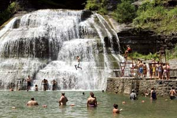 JON REIS PHOTO & DESIGN Summer fun at a waterfall in Ithaca, N.Y. |
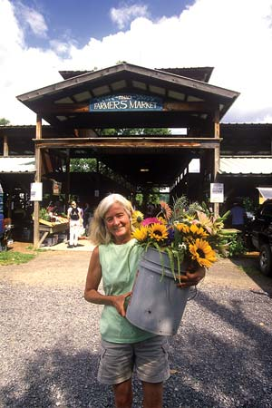 JON REIS PHOTO & DESIGN Ithaca’s renowned farmers market. |
JON REIS PHOTO & DESIGN Ithaca Hours, the famous local currency. |
|
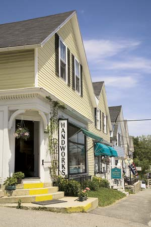 SUE ANN HODGES Blue Hill, Maine has many historic buildings and locally owned shops that sell homemade crafts. |
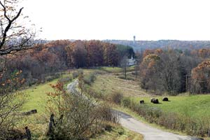 BARON/THE IMAGE FINDERS There's a calm beauty in the rolling, forested hills of Athens, Ohio. |
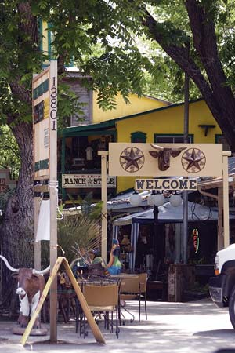 WILLIAM D. ADAMS The Olde Towne Plaza in Wimberley, Texas features several eclectic shops. |
|
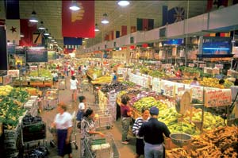 DEKALB VISITORS BUREAU The DeKalb County farmers market in Decatur, Ga. offers more than 100,000 square feet of fresh food. |
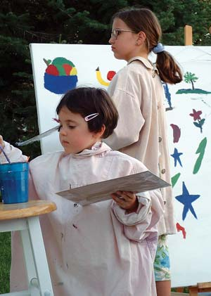 STACEY HURLIN Art is a local passion in Fairfield, Iowa. |
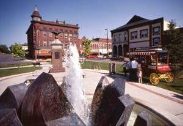 JOHN ELK III Visit downtown Northfield, Minn. in the summer and you can enjoy fresh popcorn beside a bubbling fountain. |
|
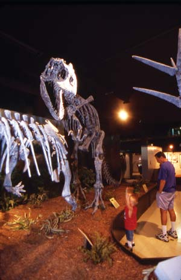 JOHN ELK III If you're ever in Grand Junction, Colo., check out the Main Street Dinosaur Valley Museum. |
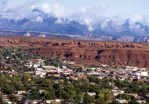 JOHN ELK III While St. George, Utah is a growing town, locals are working to preserve its scenic beauty. |
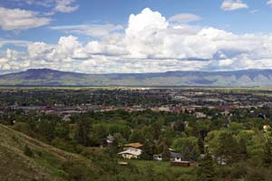 RANDY GREEN La Grande, Ore. sits in a valley between the Blue Mountains and the Wallowa Mountains. |
|
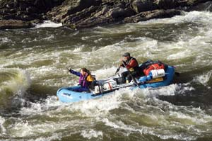 GREG VAUGHN The Rogue River near Grants Pass, Ore. offers exhilarating outdoor recreation. |
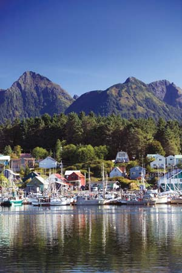 DANITA DELIMONT Boats fill the tranquil harbor of Sitka, Alaska. |
|